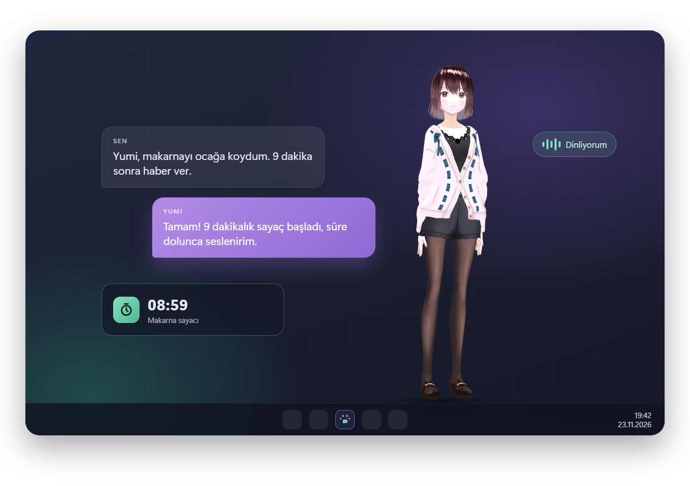
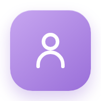
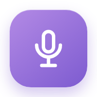
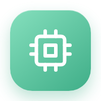
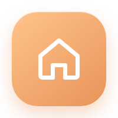
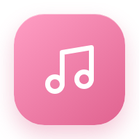

Adıyla seslen, konuş. Sayaç kurar, müzik açar, evindeki cihazları yönetir, sohbet eder. Sesini bilgisayarının içinde anlar ve sana kendi sesiyle cevap verir.
Ücretsiz indirNeler yapar?
Ses bilgisayarında işlenirSes tanıma ve ses üretimi yerelde çalışır.
Ücretsiz ve reklamsızSatış yok, abonelik yok, reklam yok.

İster karakterle, ister sade3D karakter seç ya da modelsiz kullan.
Yumi bir pencere değil; masaüstünde dolaşan, seni dinleyen ve işini yapan bir yardımcı.

Adıyla seslen ve konuş. Seni bilgisayarındaki ses tanıma dinler, Yumi doğal bir Türkçe sesle cevap verir.

Alarm, sayaç, müzik, YouTube ve ev komutları internete gitmeden, doğrudan bilgisayarında anlaşılır.
Merak ettiğini sor, fikir al, laflayın. Sohbet için Gemini ya da ChatGPT hesabını bağlarsın.

Ağındaki cihazları bulur; ışıkları, prizleri ve televizyonu panelden ya da sesle yönetirsin.

"Biraz caz aç" demen yeter. Tarayıcı eklentisiyle YouTube'da reklamlar kendiliğinden atlanır.
Bir karakter seç: masaüstünde yürür, koltuğa oturur ve kendi sesiyle konuşur.
Elin doluyken bile bir cümle yeter.
"Yumi, 9 dakika sonra haber ver."
Makarna ocaktayken sayaç kurulur; süre dolunca Yumi seslenir."Biraz caz aç."
Müzik açılır, reklamlar atlanır; sen işine devam edersin."Salonun ışığını kapat."
Ev panelinde eklediğin cihazlar sesinle açılıp kapanır.Her karakter kendi sesiyle konuşur. İstemezsen Yumi modelsiz, sade bir asistan olarak da çalışır.